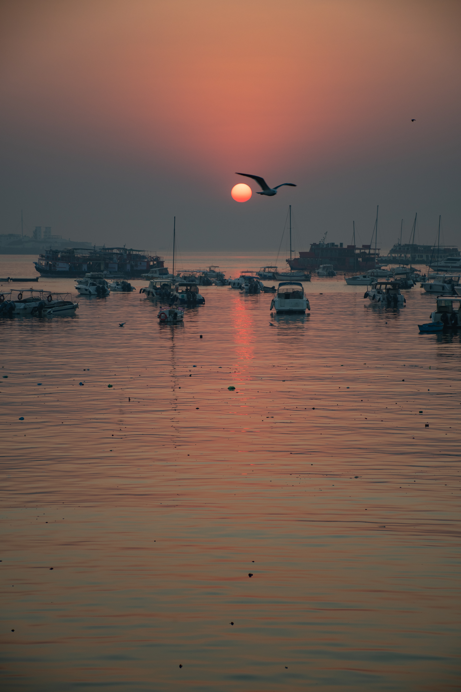
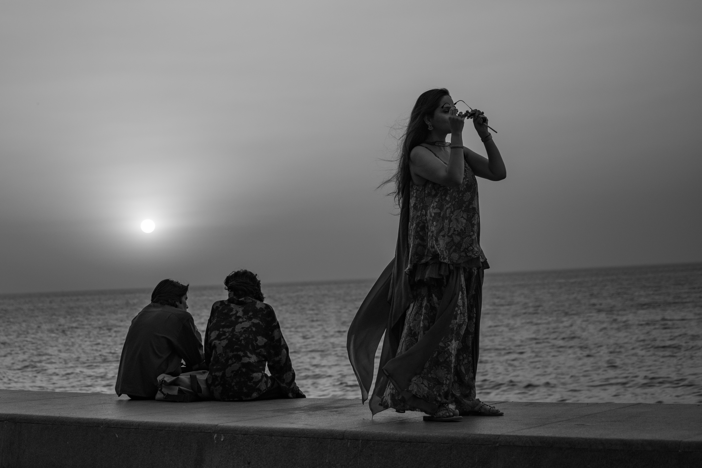
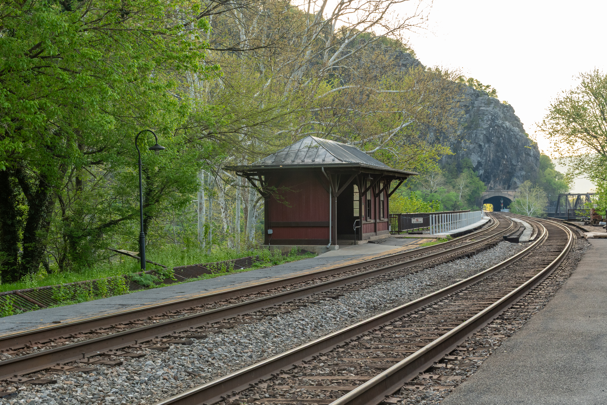
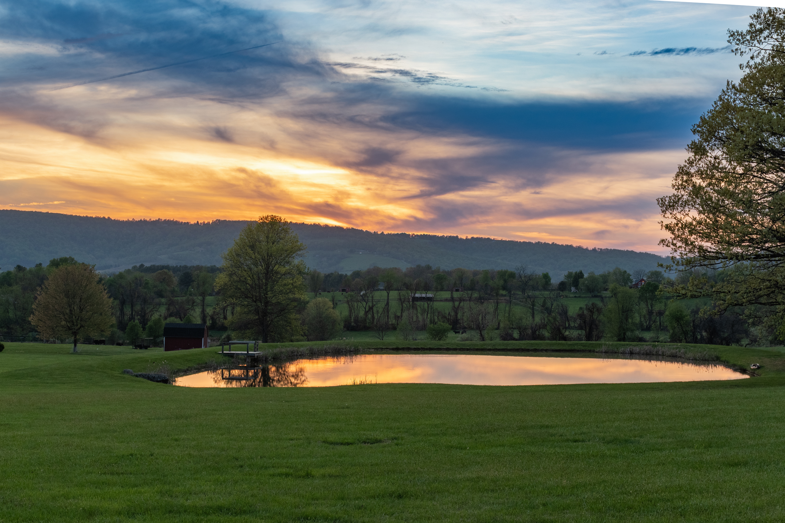
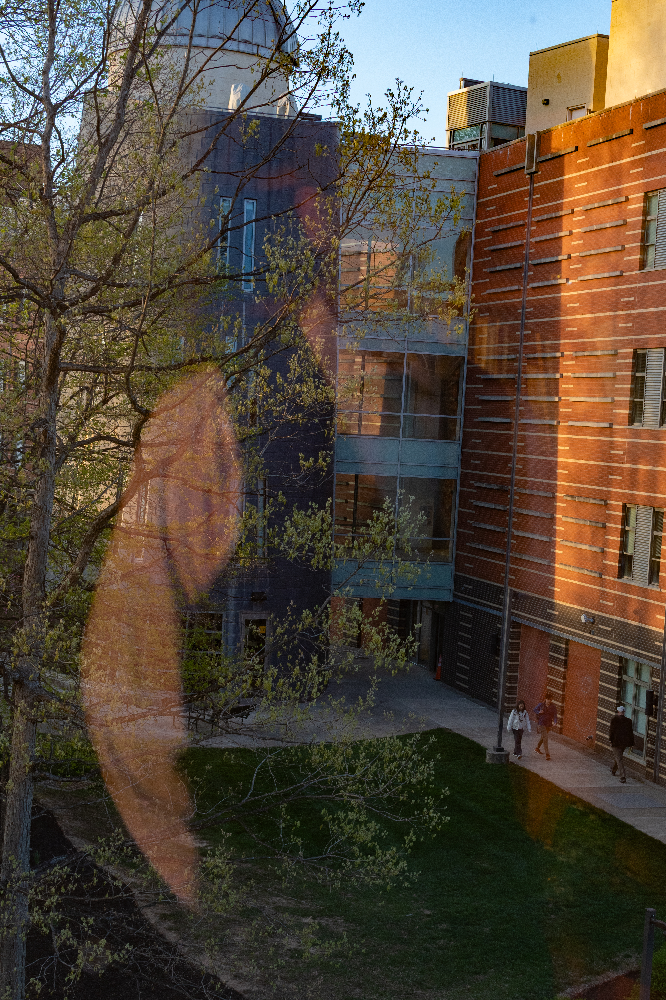
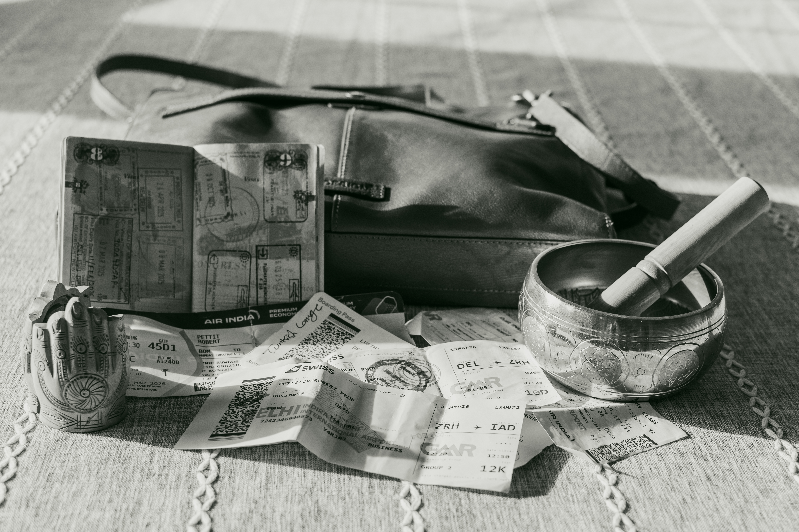

A photographic series — 2026
Mumbai · Harpers Ferry · Loudoun County · Fairfax
Six photographs tracing the arc from immersion to departure to return — and the strange lag in between.

01Immersion
A single bird crosses in front of the sun over a harbor crowded with boats, the city of Mumbai just waking around it. This image is the emotional anchor of the series — a place of scale and beauty that refuses to let go easily.

02Last Light · Leaving
Marine Drive at sunset — Mumbai's long seafront promenade where the city comes to watch the day end over the Arabian Sea. Rendered in black and white. A woman stands at the sea wall, wind pulling at her clothes. Two people sit nearby absorbed in the moment — but she is standing, turned slightly inward. The color felt too comfortable; the departure needed a different register.

03Threshold
Harpers Ferry, West Virginia. The railroad tracks recede toward a tunnel in the early morning light — a place defined by movement between states. The tunnel ahead is visible but you cannot see where it goes, and that uncertainty is the point.

04Return
Made with no planning at all. I was driving home after a night of teaching when the light over a farm pond stopped me. I happened to have my camera on the front seat that evening - it doesn't usually ride there - pulled off the road, stepped out, and made the shot. A quiet pond mirrors a dramatic sky; the Blue Ridge sits low on the horizon; a small red barn is barely visible in the middle distance. The body was already home. Apparently the eye was starting to catch up.

05Reflection
End of a teaching day, looking out from my office window at George Mason University. My own figure is faintly visible in the glass — translucent, overlaid on the spring trees and brick buildings and students walking below. What was I thinking about in that moment? Somewhere else, probably.

06Residue
A passport open to its visa pages. Air India and Swiss boarding passes scattered across a table. A travel bag not yet put away. A small singing bowl and a Hamsa figurine brought back from India sitting among the tickets. Not memories exactly. Something more stubborn than that.
Two Places at Once
Travel changes you in ways that don't resolve the moment the plane lands. You return home physically, but some part of you lingers — in the rhythm of a different city, in the light over a different harbor, in the faces of people you may never see again. This series is about that lag. It is not a comparison of two places. It is about the feeling of carrying one world inside you while standing in another.
The sequence opens in Mumbai at sunrise. A single bird crosses in front of the sun over a harbor crowded with boats, the city just waking around it. That image is the emotional anchor of the series — a place of scale and beauty that refuses to let go easily. The portrait orientation was intentional: I wanted the viewer drawn upward into the sky rather than outward across the water.
The second image moves to Marine Drive at sunset, rendered in black and white — Mumbai's long seafront promenade where the city comes to watch the day end over the Arabian Sea. A woman stands at the sea wall, wind pulling at her clothes, sunglasses raised to her lips, the sun dropping behind her. Two people sit nearby absorbed in the moment — but she is standing, turned slightly inward. Something is already leaving. I converted this image to black and white because the color felt too comfortable; the departure needed a different register.
From there the sequence crosses an ocean and lands at Harpers Ferry, where the railroad tracks and platform recede toward a tunnel in the early morning light. This is the threshold — a place defined by movement between states, by the fact that you are no longer there but not yet fully here. The tunnel ahead is visible but you cannot see where it goes, and that uncertainty is the point.
The fourth image lands in Loudoun County at dusk - made with no planning at all. I was driving home after a night of teaching when the light over a farm pond stopped me. I happened to have my camera on the front seat that evening - it doesn't usually ride there - pulled off the road, stepped out, and made the shot. A quiet pond mirrors a dramatic sky; the Blue Ridge sits low on the horizon; a small red barn is barely visible in the middle distance. The body was already home. Apparently the eye was starting to catch up.
The fifth image is a reflection — literally and otherwise. It was made at the end of a teaching day, looking out from my office window at GMU. My own figure is faintly visible in the glass, translucent, overlaid on the spring trees and brick buildings and students walking below. I am present and absent at the same time. What was I thinking about in that moment? Somewhere else, probably. I decided to leave the question open.
The series closes with the physical residue of travel — a passport open to its visa pages, Air India and Swiss boarding passes scattered across a table, a travel bag not yet put away, a small singing bowl and a Hamsa figurine brought back from India sitting among the tickets. Shot in black and white to echo the leaving images, this final frame asks what travel actually deposits when it is done. Not memories exactly. Something more stubborn than that.
The sequence moves from immersion to departure to threshold to return to reflection to residue. Color holds the living world — the place left behind and the place returned to. Black and white marks the transitions: leaving, and what remains. There is also an unplanned water thread running through the first three images — the Gateway of India harbor, Marine Drive, the Potomac at Harpers Ferry — that I noticed only afterward, and kept.
A wider aperture isolates the bird against the sunrise in the opening image and throws the harbor into soft depth behind it. Deeper depth of field in the Harpers Ferry and Loudoun images keeps the full environment readable — in those frames the landscape carries as much meaning as any single element. The residue image uses shallow depth of field to draw the eye across the objects on the table rather than fixing it on any one of them.
The Mumbai images were shot to freeze the figures and the bird against the light. The Harpers Ferry and Loudoun images use conventional shutter speeds — stillness was the intention. The reflection image captures the slow quality of end-of-day light through glass, which suits the contemplative mood of that moment in the sequence.
Color carries the worlds — the one left behind and the one returned to. Black and white marks the emotional transitions. The choice felt right before I could fully articulate why, and I decided to trust that.